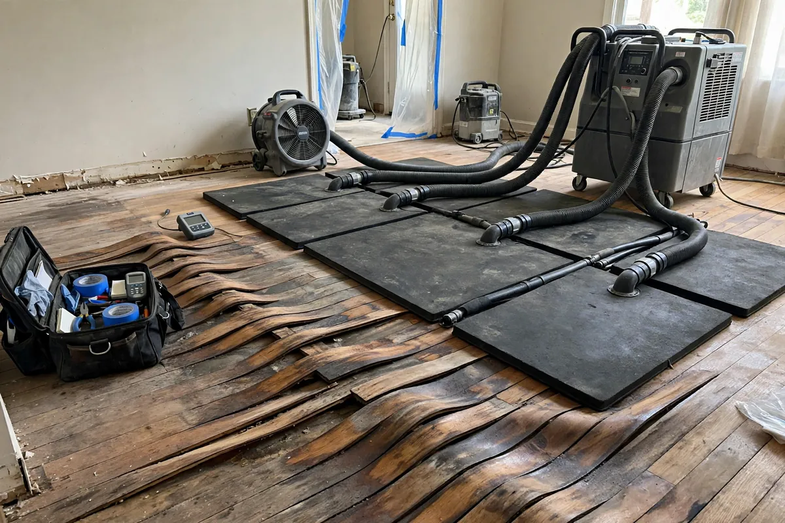

Hardwood Floor Water Cleanup in Hollywood, FL
Hardwood floors are an investment, and water is their natural enemy. Wood absorbs moisture unevenly — the tops of boards dry faster than the trapped undersides — which is why floors cup, crown, or buckle after a loss. Hardwood floor drying in Hollywood, FL is a specialty within water restoration: the goal isn't just removing water, it's returning the wood to its normal moisture content slowly and evenly enough that the floor survives.

Understanding Hardwood Floor Water Cleanup in Hollywood
The damage signatures tell you what happened. Cupping — edges higher than centers — means moisture came from below or the sides while the top dried first. Crowning — centers higher than edges — often follows sanding a cupped floor too soon, or moisture arriving from above. Buckling, where boards lift off the subfloor entirely, means severe saturation and usually requires replacement of the affected section. Engineered hardwood behaves differently than solid: its thin veneer layer tolerates less sanding, which limits repair options.
Hollywood's humidity complicates everything. Wood is hygroscopic — it constantly exchanges moisture with the air — so drying a floor in a humid climate means controlling the indoor environment, not just pointing fans at it. Dehumidification matters as much as airflow. And patience is non-negotiable: rushing hardwood drying with excessive heat can cause surface checking and permanent damage worse than the water itself.
How We Handle the Job
We start with wood-specific moisture readings — pin meters with a wood scale, compared against unaffected areas of the same floor to establish what's normal for your home. Standing water is extracted without aggressive scrubbing that could force water deeper into seams. Then comes the specialized equipment: drying mats or panels that pull moisture through the boards evenly, paired with dehumidifiers controlling the room's humidity. The setup runs balanced — never a blast furnace.
Progress is tracked with repeated meter readings over days, not hours — hardwood drying is measured in days to weeks depending on species, finish, and saturation depth. Once readings stabilize at the floor's normal range, the mats come off and the floor is reassessed: minor cupping often relaxes flat on its own, while boards that stay distorted are flagged for repair or replacement. Related services such as emergency water extraction, structural drying, and flood cleanup often connect to the same loss depending on conditions on site.
Local Response and Insurance Support
Searching for hardwood floor water cleanup near me usually means you need help without delay. We answer emergency calls around the clock. Documentation — photos and moisture readings — supports conversations with your insurance carrier when the loss is sudden and accidental. We do not decide coverage; we provide clear technical information about the work performed.
When to Call
Call if you have active water, wet materials that are not drying, odors after a leak, or a backup that may involve contaminated water. Early action in Hollywood’s climate is almost always less disruptive than waiting. For neighborhood-specific service, see our service areas. For the full list of capabilities, visit all services.
Frequently Asked Questions
Will my cupped hardwood floor flatten out on its own?
Often, yes — if it's dried properly. Cupping is usually a temporary response to uneven moisture, and boards frequently relax back toward flat as moisture content equalizes. The critical mistake is sanding a cupped floor before it's fully dry; that creates crowning, which is permanent. Let drying finish completely before any refinishing decisions.
How long does hardwood floor drying take?
Longer than any other flooring type — typically many days to a couple of weeks, depending on species, board thickness, finish type, and saturation depth. Anyone promising overnight hardwood drying is selling something the wood can't deliver. Moisture meter readings set the timeline, and rushing it risks permanent damage.
Can engineered hardwood be saved after water damage?
Sometimes. Engineered flooring's plywood core handles moisture better than solid wood in some ways, but its thin veneer can't be sanded aggressively if distortion remains. Surface water caught quickly often dries fine; prolonged saturation that swells the core usually means replacement. Veneer thickness and the extent of swelling decide it.
Should I run my AC during floor drying?
Yes — air conditioning is one of the best drying tools in a Florida home, since it removes humidity as it cools. Keep it in a normal comfort range rather than cranking it to extremes. The drying equipment works with your HVAC, not against it, and stable indoor conditions help the wood dry evenly.